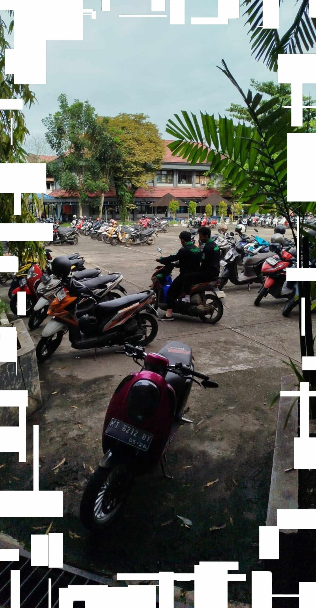
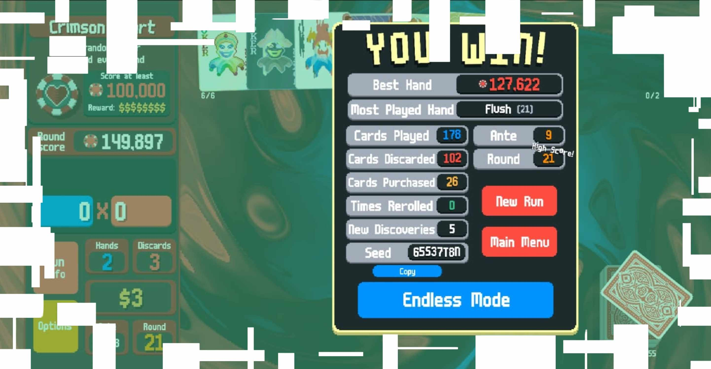
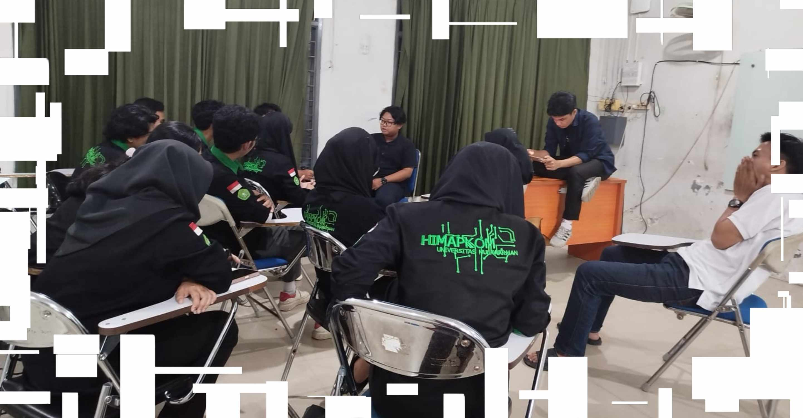
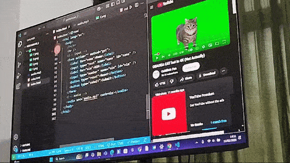
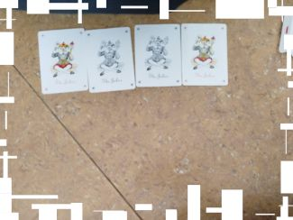

musik: confined overture - fourtrifiveO
MENUHari ini, saya bangun pada pukul 5 pagi. Saya tidak ingat sih apa yang terjadi di hari ini. Tapi, yang saya inget di hari ini adalah sebagai berikut:
Itu aja sih.
Temen ada nyuruh saya ke kampus pagi ini. Saya gak tau kalau saya yang emang gak paham apa yang dia bilang atau gimana lah, tapi saya memutuskan untuk datang aja ke kampus. Pas itu jam 12 siang dan disana ada 5 orang termasuk saya, gak ngapa-ngapain. Gak ada urusan sih saya di situ, sedangkan mereka ngebahas laporan divisi-nya mereka. Ya kayak gimana gitu ya rasanya.
Itu aja sih.
Jam 8 pagi. Ngampus. Urusan HIMA. Saya jalan pake tongkat, kek seru gitu sih. Temen pada mau nyobain tongkatnya. Ya dimainin git tongkatnya, jadi lucu mereka. Duh, agak susah ya jadi BPH, tapi mau gimana lagi: Cuman aku yang bisa.
Oh iya, kakiku sakit (kepeset, tehantup lutut). Makanya saya bawa tongkat jalan. Jadi kalo saya jatoh masih bisa berdiri! Pas lagi nyantai, saya ada main game HP yang namanya Balatro, habis itu saya menang. Saya ngasih tau temen kalo itu adalah kali kedua saya menang game itu
Jam 2 siang. Tadi rapatnya aman-aman aja. Ada kutipan dari karakter game, katanya:
Nyaman rasanya bediam sambil ngedengerin temen-temenku ngobrol.
Nanti di hari lain saya bisa berguna ke mereka. Yakin saya.
Itu aja sih.
Jujur, saya lupa kejadian apa yang terjadi di hari ini dan di hari-hari kedepannya soalnya pas saya ngetik tulisan ini tanggal sekarang adalah 17 Februari 2025. Blog-nya akan lanjut di hari-hari tertentu yang dimana saya inget ada hal yang terjadi di hari itu. Seru gak sih?
Karena gak ada entri disini, silahkan mainkan game yang saya suka dulu pas kecil.
Itu aja sih.
Wih, banyak kelasnya minggu ini. Untungnya saya suka matkulnya, seperti kelasnya Pak Wayan, Teknik Multimedia. Entah kenapa saya nyengir terus sepanjang matkul :]. Seperti biasa di kelasnya Pak Wayan, saya dikelompokkan dengan 4 teman untuk ngebahas salah satu topik studi kasus, yakni sudut kamera yang bisa digunakan untuk berfoto. Habis itu kita iseng ngefoto sembarangan.
Nah, itu FARIS dan saya sendiri. Saya dan VALENT yang ngambil foto
VALENT juga ada ngerekam AKBAR, sih.
Oh iya, hari ini adalah hari dimana kita dikasih tugas ini! Pemrograman Web 1, diampu oleh Pak Ravi. Kita juga make komputer-komputer baru yang ada di LabKom untuk belajar. Mirip banget seperti barang yang digunakan di SMA saya.
Juga ada meme kucing.
Ya, lumayan lah harinya!
Itu aja sih.
Saya datang ke kampus pas jam 11 pagi, kayaknya. Kita pengen rekaman penutup
untuk video launching kabinet. Berdiri di terik matahari kayak gitu bikin saya inget
masa-masa diaman kita ngadakan upacara bendera. Ada anggota departemen saya, si BAROK, dia terlihat sakit gitu, na.
Sakit tapi kayak marah gitu. Untungnya temennya baik dan neduhin dia pakai bendera.
Saya bener-bener respek sama anggota saya, bener. Mereka paham
banget peralatan yang mereka gunakan. Ada yang punya drone, loh. hah????
Ini foto-nya Tim Media yang ngurusin kita semua. Wow.
Pas udah selesai, saya gak langsung pulang. Saya ngeliatin temen lagi main kartu "Jendral". Saya gak pernah sih main kartu kayak gituan, tapi FARIS ngajarin aku cara mainnya. Lumayan.
Itu aja sih.
Hari ini, saya bangun pada pukul 5 pagi. Saya inget apa saja yang terjadi di hari ini karena sekarang adalah 7 Februari 2025. Hal-hal yang saya ingat adalah sebagai berikut:
Itu aja sih dari saya. Terima kasih, ya. Dadah!